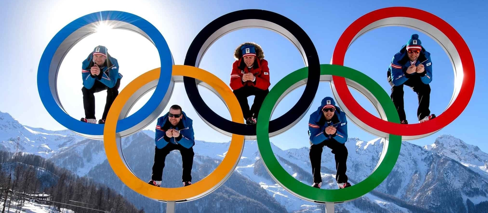
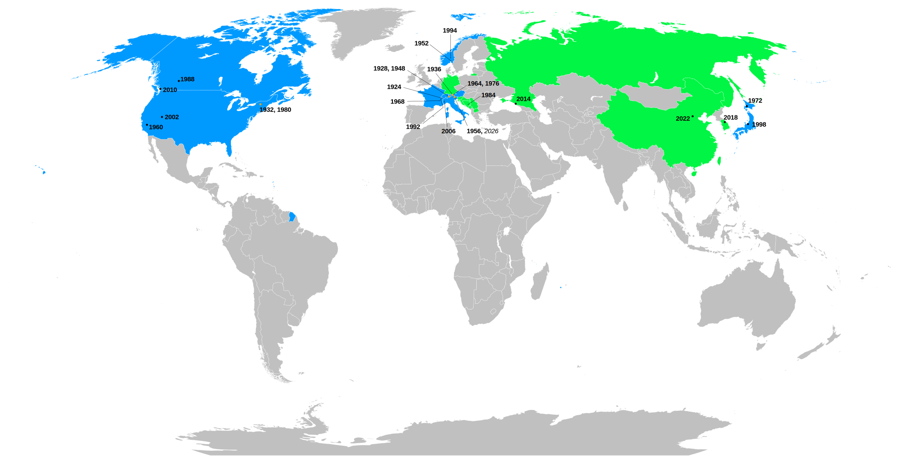

WINTER OLYMPICS
The Winter Olympics are where the world comes to
compete, feel inspired, and be together.
INTRODUCTION
Sport Events
The Winter Olympic Games are the largest winter sporting celebration in terms of the number of sports on the programme, the number of athletes present and the number of people from different nations gathered together at the same time, in the same place, in the spirit of friendly competition.
The first Winter Olympic Game was held in Chamonix, France, in 1924 for sports practiced on snow and ice. Since 1994, the Olympic Games have alternated between a summer and winter edition every two years within the four-year period of each Olympiad. Athletes from all 206 National Olympic Committees and the IOC Olympic Refugee Team are eligible to compete in a wide range of sporting disciplines and events, watched by a worldwide audience.
Olympic Values
The three values of Olympism are excellence, friendship and respect. They constitute the foundation on which the Olympic Movement builds its activities to promote sport, culture and education with a view to building a better world.
Olympism is a philosophy of life, exalting and combining in a balanced whole the qualities of body, will and mind. Blending sport with culture and education, Olympism seeks to create a way of life based on the joy found in effort, the educational value of good example and respect for universal fundamental ethical principles.
Unity in Diversity
The Winter Olympic Games are the world's most powerful symbol of unity in all our diversity, with the participation of teams from more than 90 National Olympic Committees and the IOC Refugee Olympic Team. They send a powerful message of diversity, inclusion and non-discrimination as athletes from all races, religions, ethnicities and cultures compete with each other and live together in harmony in the Olympic Village.
It always builds bridges and never erect walls, which helps to keep a people-to-people communication channel open between people from different nations and separate from politics. In our fragile world, the power of the Winter Olympic Games to bring the whole world together, despite all the existing differences, gives us all hope for a better future.

PAST WINTER GAMES
The Winter Olympic Games have been hosted on three continents by thirteen countries. They have been held four times in the United States (1932, 1960, 1980, and 2002), three times in France (1924, 1968, and 1992) and twice each in Austria (1964 and 1976), Canada (1988 and 2010), Japan (1972 and 1998), Italy (1956 and 2006), Norway (1952 and 1994) and Switzerland (1928 and 1948). Also, the Winter Olympic Games have been held just once each in Germany (1936), Yugoslavia (1984), Russia (2014), South Korea (2018), and China (2022). The IOC has selected Italian cities of Milan and Cortina d'Ampezzo to host the 2026 Winter Olympics.
This map coming from Wikipedia shows the host city of each Winter Olympics. Countries that host the Game once are in green, while countries host two or more times are in blue.

2022
2018
2014
2010
2006
2002
1998
1994
1992
1988
1984
1980
1976
1972
1968
1964
1960
1956
1952
1948
1932
1928
1924
WINTER OLYMPIC SPORTS
The original five Winter Olympic Sports were bobsleigh, curling, ice hockey, Nordic skiing, and skating. Then other sports and disciplines have been added and some of them, such as alpine skiing, luge, short track speed skating, freestyle skiing, skeleton, and snowboarding, have earned a permanent spot on the Olympic program. Some others, including curling and bobsleigh, have been discontinued and later reintroduced; others have been permanently discontinued, such as military patrol, though the modern Winter Olympic sport of biathlon is descended from it. Still others, such as speed skiing, bandy and skijoring, were demonstration sports but never incorporated as Olympic sports.

ALPINE SKIING |

BIATHLON |

BOBSLEIGH |

CROSS-COUNTRY SKIING |

CURLING |

FIGURE SKATING |

FREESTYLE SKIING |

ICE HOCKEY |

LUGE |

NORDIC COMBINED |

SHORT TRACK SPEED SKATING |

SKELETON |

SKI JUMPING |

SNOWBOARD |

SPEED SKATING |